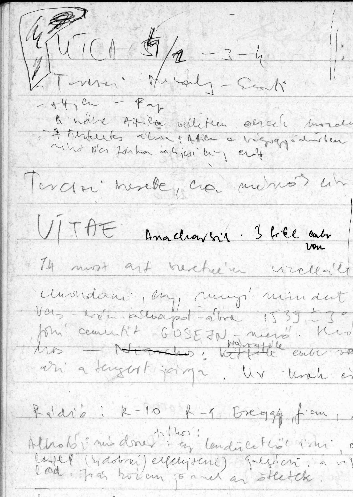

<!DOCTYPE html>
<html lang="en">
  <head>
    <meta charset="UTF-8" />
    <meta name="viewport" content="width=device-width, initial-scale=1.0" />
    <meta http-equiv="X-UA-Compatible" content="ie=edge" />
    <meta
      name="description"
      content="A Debreceni Irodalom Háza honlapja Tar Sándor íróról."
    />
    <meta name="robots" content="index,follow" />
    <link rel="icon" href="../../img/favicon.ico" />
    <link
      href="https://fonts.googleapis.com/css2?family=Anton&family=Lobster&family=Montserrat&family=Roboto:wght@400;700;900&display=swap"
      rel="stylesheet"
    /> 
    <link rel="preconnect" href="https://fonts.gstatic.com">
    <link href="https://fonts.googleapis.com/css2?family=Kelly+Slab&display=swap" rel="stylesheet"> 
    <link href="https://fonts.googleapis.com/css2?family=Play&display=swap" rel="stylesheet"> 
    <link rel="stylesheet" href="../../styles/style.css" />
    <title>Tar Sándor | Kéziratok, levelek</title>
  </head>
</html>
</head>
<body>
  
  <header class="main-head">
    
    <nav>
      <div id="logo">
        <a href="../../index.html"> 
  
  
          
        </a>
      </div>
      <ul>
        <li><a id="underline" href="../../eletut/index.html">Életút</a></li>
        <li><a class="current" href="../../muvek/muvek-main.html">Művek</a></li>
        <li><a id="underline" href="../../gallery/index.html">Fotók</a></li>
        <li><a id="underline" href="../../hanganyagok/index.html">Hanganyagok</a></li>
        <li><a id="underline" href="../../tarrol/tarrol.html">T.S.-ról</a></li>
      </ul>
    </nav>
    
  </header>

  <main>
    <div class="component">
        <ul class="align">
          <!-- Book 1 -->
          <li id="book1">
            <figure class=book>        
              <!-- Front -->        
              <ul class='hardcover_front'>
                <li>
                  
                  <!--<span class="ribbon bestseller">2000</span>-->
                </li>
                <li></li>
              </ul>        
              <!-- Pages -->        
              <ul class=page>
                <li>
                    
                </li>
                <li>
                  <a class="btn" href="./valaszokkerdesekre.html">Olvass<br>bele!</a>
                </li>
                <li></li>
                <li></li>
                <li></li>
              </ul>        
              <!-- Back -->        
              <ul class=hardcover_back>
                <li></li>
                <li></li>
              </ul>
              <ul class=book_spine>
                <li></li>
                <li></li>
              </ul>
              <figcaption>
                <h1>Válaszok - kérdésekre</h1>
                <span>KÉZIRAT</span>
                <p>„Jólesik, hogy a Szerkesztőség másodszor is szociográfussá avat ezzel a gesztussal,
                  és bár nem túl gyakran kápráztatom el az olvasót az újságok, folyóiratok hasábjain, sem
                  máshol -– én is annak tartom magam. Életpályám nem tartalmaz merész fordulatokat: egy tanyán nőttem fel,
                  Debrecenben végeztem a gépipari technikumot, majd dolgozni kezdtem. Voltam
                  esztergályos, köszörűs, műszaki rajzoló, automata-kezelő, kovács, minőség-ellenőr,
                  lemosó, festő, röntgenszerelő, művezető, diszpécser, stb.; katonaként tüzér, rádiós,
                  fegyvermester.”</p>
              </figcaption>
            </figure>
          </li>  
          


        </ul>  
      </div>
  </main>
  <footer>
    <div class="footer-make">
      <p>
        Készült Debrecenben ©2021  |  &#169 <a target="_blank" href="https://www.derimuzeum.hu/irodalomhaza/">Debreceni Irodalom Háza,</a> <a target="_blank" href="https://www.derimuzeum.hu/">Déri Múzeum</a>  
      </p>
    </div>
    <div class="footer-menu">
      <a href="../../impresszum.html">Impresszum</a>
      <a href="#">Adatvédelmi tájékoztató</a>

    </div>
  </footer>
  <script src="https://cdnjs.cloudflare.com/ajax/libs/jquery/2.1.3/jquery.min.js"></script>
  <script src="./typewriter.js"></script>
</body>
</html>
